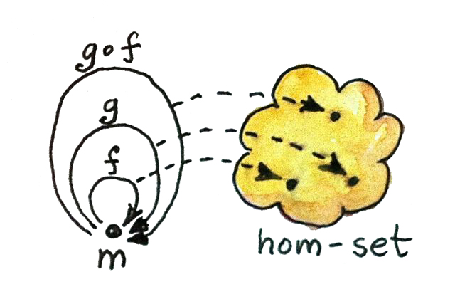

研究各种各样的例子，才能真正体会范畴的意味。范畴有各种形态和大小，经常在意想不到的地方冒出来。我们先从非常简单的东西开始。
没有对象
最平凡的范畴拥有零个对象，因此也拥有零个态射。孤零零地看，它是一个非常悲伤的范畴；但放进其他范畴的语境，它也许很重要——例如在所有范畴组成的范畴中（没错，确实有这样一个范畴）。既然你觉得空集有意义，为什么空范畴就不能有意义？
简单图
只要用箭头连接对象，就能构造范畴。你可以想象从任意有向图出发，只需继续添加箭头，就把它变成一个范畴。首先，在每个节点上添加恒等箭头。然后，对任意两支首尾相接的箭头——换句话说，任意一对可复合箭头——添加一支新箭头作为它们的复合。每次添加新箭头时，还必须继续考虑它与其他箭头（恒等箭头除外）以及它自身的复合。最后通常会得到无限多支箭头，不过这没有问题。
换个角度看，这个过程创建了一个范畴：图中的每个节点对应一个对象，而图中所有可能的可复合边链对应态射。（甚至可以把恒等态射看作长度为零的特殊链。）
这样的范畴称为由给定图生成的自由范畴。这是自由构造的一个例子：只添加满足结构定律所需的最少元素，将给定结构补充完整——这里需要满足的是范畴定律。以后还会看到更多例子。
序
现在来看一种完全不同的东西！在这个范畴中，态射是对象之间的关系：小于或等于。我们检查一下它是否真的是范畴。有恒等态射吗？每个对象都小于或等于自身：通过！有复合吗？如果 a ≤ b 且 b ≤ c，那么 a ≤ c：通过！复合满足结合律吗？通过！带有这种关系的集合称为预序，因此预序的确是一个范畴。
还可以采用更强的关系，它额外满足一项条件：如果 a ≤ b 且 b ≤ a，那么 a 必须与 b 相同。这称为偏序。
最后，还可以要求任意两个对象之间总存在某一方向的关系；由此得到线序或全序。
让我们把这些有序集合刻画为范畴。预序是一种范畴，其中从任意对象 a 到任意对象 b 至多存在一个态射。这类范畴还有一个名称：“薄范畴”。预序就是薄范畴。
在范畴 C 中，从对象 a 到对象 b 的态射集合称为 hom 集，写作 C(a, b)（有时也写作 HomC(a, b)）。因此，预序中的每个 hom 集要么为空，要么是单元素集合。这也包括 hom 集 C(a, a)——从 a 到自身的态射集合；在任何预序中，它都必须是只包含恒等态射的单元素集合。不过，预序中可能存在环；偏序则不允许环存在。
识别预序、偏序和全序非常重要，因为排序与它们有关。快速排序、冒泡排序、归并排序等排序算法，只能在全序上正确工作。偏序则可以使用拓扑排序。
作为集合的幺半群
幺半群是一个简单得令人难为情、却又强大得惊人的概念。它位于基本算术背后：加法和乘法都构成幺半群。幺半群在编程中无处不在，它们以字符串、列表、可折叠数据结构、并发编程中的 future、函数响应式编程中的事件等形式出现。
传统上，幺半群定义为带有一个二元运算的集合。这个运算只需满足结合律，并且集合中存在一个特殊元素，在该运算下充当单位元。
例如，包含零的自然数在加法下构成幺半群。结合律意味着：
换句话说，数字相加时可以省略括号。
中性元素是零，因为：
并且：
第二条等式其实是多余的，因为加法满足交换律（a + b = b + a）；但交换律并不是幺半群定义的一部分。例如，字符串连接不满足交换律，却仍然构成幺半群。顺便说一句，字符串连接的中性元素是空字符串：把它连接到字符串的任意一侧，都不会改变原字符串。
在 Haskell 中，我们可以为幺半群定义一个类型类：它描述一种拥有称为 mempty 的中性元素和称为 mappend 的二元运算的类型：
class Monoid m where
mempty :: m
mappend :: m -> m -> m双参数函数的类型签名 m -> m -> m 起初也许有些奇怪，但讨论柯里化之后，它就会完全合理。包含多个箭头的签名有两种基本解释：可以把它看作多参数函数，最右边的类型是返回类型；也可以看作接受一个参数（最左边的参数）并返回一个函数的函数。后一种解释可以通过添加括号来强调：m -> (m -> m)。因为箭头是右结合的，这些括号本来可以省略。我们很快会回到这种解释。
请注意，Haskell 无法表达 mempty 和 mappend 应满足的幺半群性质——也就是 mempty 是中性元素、mappend 满足结合律。确保这些性质成立，是程序员的责任。
Haskell 的类不像 C++ 类那样具有侵入性。定义新类型时，不必预先指定它属于哪个类。你完全可以拖延到很久以后，再声明某个类型是某个类的实例。例如，我们通过提供 mempty 与 mappend 的实现，把 String 声明为幺半群（事实上，标准 Prelude 已经替你完成了这件事）：
instance Monoid String where
mempty = ""
mappend = (++)这里复用了列表连接运算符 (++)，因为 String 只不过是字符列表。
补充一点 Haskell 语法：任何中缀运算符只要用括号包围，就能变成双参数函数。给定两个字符串，可以把 ++ 插在它们之间来连接：
"Hello " ++ "world!"也可以把它们作为两个参数传给加了括号的 (++)：
(++) "Hello " "world!"请注意，函数参数不用逗号分隔，外面也没有括号。（这大概是学习 Haskell 时最难适应的事情。）
值得强调的是，Haskell 允许你表达函数之间的相等，例如：
mappend = (++)从概念上说，这不同于表达函数产生的值相等，例如：
mappend s1 s2 = (++) s1 s2前一种写法对应 Hask 范畴中的态射相等（如果忽略底——也就是永不结束的计算——也可视作 Set 中的态射相等）。这类等式不仅更简洁，而且往往可以推广到其他范畴。后一种称为外延相等：它断言，对任意两个输入字符串，mappend 与 (++) 的输出相同。由于参数值有时也称为点（例如“函数 f 在点 x 处的值”），所以这又称为逐点相等。不指定参数的函数相等则称为无点表达。（顺带一提，无点等式往往包含函数复合，而复合恰好用一个点表示；这可能让初学者有点困惑。）
在 C++ 中，最接近幺半群声明的做法，是使用 C++20 标准的 concept 特性：
template<typename T>
struct mempty;
template<typename T>
T mappend(T, T) = delete;
template<typename M>
concept Monoid = requires (M m) {
{ mempty<M>::value() } -> std::same_as<M>;
{ mappend(m, m) } -> std::same_as<M>;
};第一个定义是一个结构体，用来为每个特化保存中性元素。
关键字 delete 表示没有定义默认值：必须逐个情况指定。类似地，mappend 也没有默认实现。
concept Monoid 检查：对于给定类型 M，是否存在合适的 mempty 与 mappend 定义。
要让某个类型实例化 Monoid concept，可以提供相应的特化与重载：
template<>
struct mempty<std::string> {
static std::string value() { return ""; }
};
template<>
std::string mappend(std::string s1, std::string s2) {
return s1 + s2;
}作为范畴的幺半群
上面是我们“熟悉的”定义：用集合元素来定义幺半群。但你已经知道，范畴论试图摆脱集合及其元素，转而讨论对象与态射。因此稍微改变视角，把二元运算的应用看作在集合中“移动”或“平移”事物。
例如，有一种运算会给每个自然数加 5。它把 0 映射到 5，把 1 映射到 6，把 2 映射到 7，如此继续。这是定义在自然数集合上的一个函数。很好：我们有一个函数和一个集合。一般而言，对任意数字 n，都有一个“加 n”的函数——n 的加法器。
加法器怎样复合？“加 5”函数与“加 7”函数复合，得到“加 12”函数。因此，加法器的复合可以等同于加法规则。这也很好：我们能够用函数复合替代加法。
但还不止这些：中性元素零也有对应的加法器。加零不会移动任何东西，所以它就是自然数集合上的恒等函数。
我完全可以不给你传统的加法规则，只给出加法器的复合规则，而且不会损失任何信息。注意，加法器的复合满足结合律，因为函数复合满足结合律；同时，还有与恒等函数对应的零加法器。
敏锐的读者也许已经注意到，从整数到加法器的映射来自对 mappend 类型签名 m -> (m -> m) 的第二种解释。它告诉我们，mappend 把幺半群集合中的一个元素映射为作用于该集合的函数。
现在，我希望你忘掉自己正在处理自然数集合，只把它想成一个单独的对象——一团带有许多态射（加法器）的东西。幺半群是一个单对象范畴。事实上，monoid 这个名称来自希腊语 mono，意思是“单一”。每个幺半群都可以描述成单对象范畴，其中的一组态射遵守适当的复合规则。
字符串连接是一个有趣的例子，因为我们可以选择定义右追加器，也可以定义左追加器（如果你愿意，也可称为前置器）。两种模型的复合表互为镜像。你很容易验证：先追加 “foo”、再追加 “bar”，对应于先前置 “bar”、再前置 “foo”。
你也许会问：每一个范畴式幺半群——也就是单对象范畴——是否都会定义一个唯一的“集合加二元运算”式幺半群？事实证明，我们始终可以从单对象范畴中抽取一个集合。这个集合就是态射的集合——在前面的例子中，就是加法器。换句话说，在范畴 M 中，唯一对象 m 有一个 hom 集 M(m, m)。我们很容易在这个集合上定义二元运算：两个集合元素的幺半群乘积，就是与相应态射复合对应的那个元素。如果给我 M(m, m) 中分别对应 f 和 g 的两个元素，它们的乘积就对应复合 f ∘ g。由于这些态射的源与目标都是同一个对象，复合永远存在；根据范畴定律，它还满足结合律。恒等态射就是这一乘积的中性元素。因此，我们总能从范畴式幺半群恢复出集合式幺半群。就所有实际目的而言，它们是同一个东西。

这里仅有一个可供数学家挑剔的小问题：态射不一定组成集合。在范畴的世界里，存在比集合更大的东西。如果一个范畴中任意两个对象之间的态射都组成集合，就称该范畴为局部小范畴。正如承诺的那样，我基本会忽略这些微妙之处，不过觉得还是应该在记录中提上一句。
范畴论中许多有趣现象都源于这一事实：hom 集的元素既可以被看作遵守复合规则的态射，也可以被看作集合中的点。在这里，范畴 M 中的态射复合，转化成集合 M(m, m) 上的幺半群乘积。
习题
- 分别从下列图生成自由范畴：
- 一个节点、没有边的图；
- 一个节点、一条有向边的图（提示：这条边可以与自身复合）；
- 两个节点、其间只有一支箭头的图；
- 一个节点、26 支分别标有字母 a、b、c……z 的箭头的图。
点击展开参考答案
- 一个对象，只有自动加入的恒等态射。
- 一个对象与态射 a，还必须包含 id, a, a², a³, …；复合就是指数相加。
- 两个对象、各自的恒等态射，以及题给的那支箭头；没有其他非平凡复合。
- 一个对象；态射是由 26 个字母组成的所有有限字符串，空串为恒等，复合为字符串连接。
- 下面各是什么类型的序？
- 以包含关系为序的一组集合：如果 A 的每个元素也是 B 的元素，就说 A 包含于 B；
- 带有如下子类型关系的 C++ 类型：如果指向
T1的指针可以传给期待T2指针的函数而不触发编译错误，则T1是T2的子类型。
点击展开参考答案
- 包含关系是偏序：自反、传递、反对称，但通常不是全序，因为两个集合可能互不包含。
- 把彼此可隐式转换的别名类型视为同一对象后是偏序；若保留不同但相互可转换的类型，严格说只是预序，因为反对称性可能失败。
- 考虑到
Bool是由True与False构成的二元素集合，证明它分别关于运算符&&（与）和||（或）构成两个集合论意义上的幺半群。点击展开参考答案
&&和||都对布尔值封闭并满足结合律。&&的单位元是True，因为True && x = x = x && True；||的单位元是False。因此两者各自构成幺半群。 - 把带有“与”运算的
Bool幺半群表示为范畴：列出态射及其复合规则。点击展开参考答案
范畴只有一个对象。态射为
True与False；复合定义为布尔与：T∘T=T，其余三种组合均为F。恒等态射是True。 - 把模 3 加法表示为幺半群范畴。
点击展开参考答案
取一个对象，态射为
0、1、2。复合是模 3 加法：m ∘ n = (m+n) mod 3，恒等态射为0。结合律继承自整数加法。